2023 Advanced Higher Biology marking instructions
Source: Scottish Qualifications Authority (SQA) / Qualifications Scotland. This is a StemInteract HTML companion, not an official HTML edition. Selectable text is supplied alongside original page images. Use the images or original PDF for equations, powers, fractions, vector notation, tables and diagrams; text extraction cannot fully preserve mathematical layout.
Jump to a question
PDF page 1
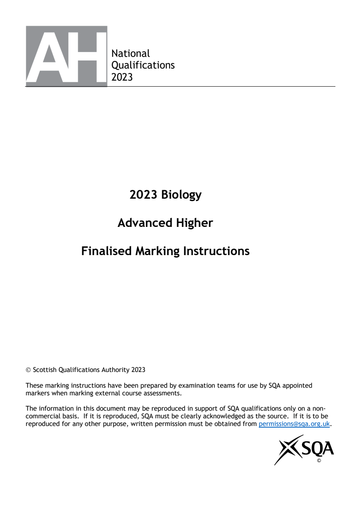
Selectable page text
National
Qualifications
2023
2023 Biology
Advanced Higher
Finalised Marking Instructions
Scottish Qualifications Authority 2023
These marking instructions have been prepared by examination teams for use by SQA appointed
markers when marking external course assessments.
The information in this document may be reproduced in support of SQA qualifications only on a non-
commercial basis. If it is reproduced, SQA must be clearly acknowledged as the source. If it is to be
reproduced for any other purpose, written permission must be obtained from permissions@sqa.org.uk.
©PDF page 2
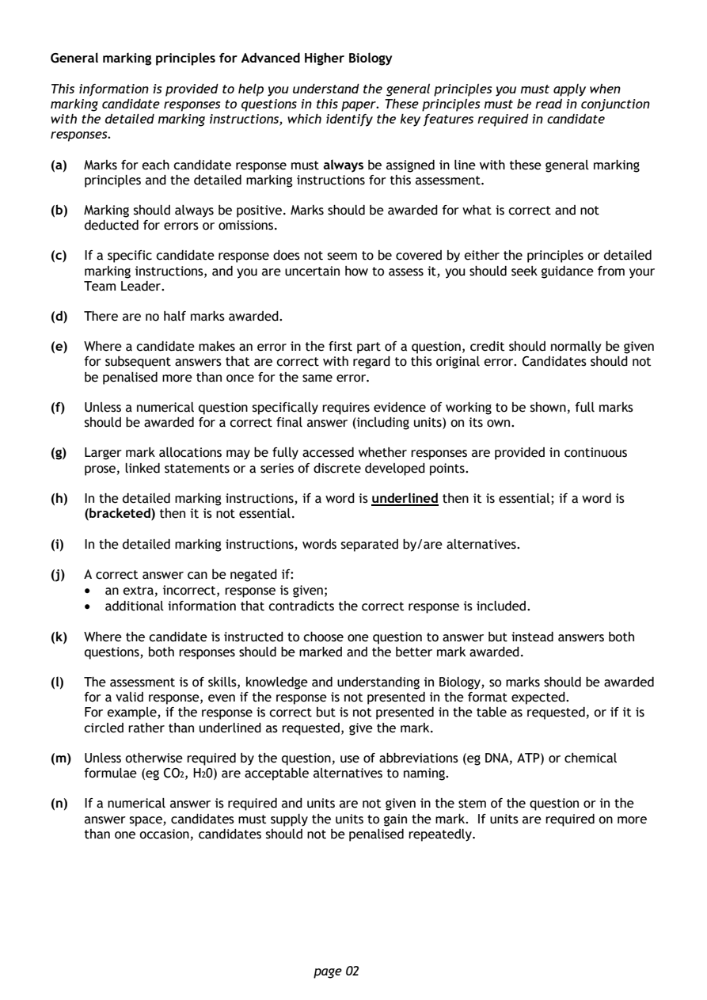
Selectable page text
General marking principles for Advanced Higher Biology
This information is provided to help you understand the general principles you must apply when
marking candidate responses to questions in this paper. These principles must be read in conjunction
with the detailed marking instructions, which identify the key features required in candidate
responses.
(a) Marks for each candidate response must always be assigned in line with these general marking
principles and the detailed marking instructions for this assessment.
(b) Marking should always be positive. Marks should be awarded for what is correct and not
deducted for errors or omissions.
(c) If a specific candidate response does not seem to be covered by either the principles or detailed
marking instructions, and you are uncertain how to assess it, you should seek guidance from your
Team Leader.
(d) There are no half marks awarded.
(e) Where a candidate makes an error in the first part of a question, credit should normally be given
for subsequent answers that are correct with regard to this original error. Candidates should not
be penalised more than once for the same error.
(f) Unless a numerical question specifically requires evidence of working to be shown, full marks
should be awarded for a correct final answer (including units) on its own.
(g) Larger mark allocations may be fully accessed whether responses are provided in continuous
prose, linked statements or a series of discrete developed points.
(h) In the detailed marking instructions, if a word is underlined then it is essential; if a word is
(bracketed) then it is not essential.
(i) In the detailed marking instructions, words separated by/are alternatives.
(j) A correct answer can be negated if:
• an extra, incorrect, response is given;
• additional information that contradicts the correct response is included.
(k) Where the candidate is instructed to choose one question to answer but instead answers both
questions, both responses should be marked and the better mark awarded.
(l) The assessment is of skills, knowledge and understanding in Biology, so marks should be awarded
for a valid response, even if the response is not presented in the format expected.
For example, if the response is correct but is not presented in the table as requested, or if it is
circled rather than underlined as requested, give the mark.
(m) Unless otherwise required by the question, use of abbreviations (eg DNA, ATP) or chemical
formulae (eg CO , H 0) are acceptable alternatives to naming.
2 2
(n) If a numerical answer is required and units are not given in the stem of the question or in the
answer space, candidates must supply the units to gain the mark. If units are required on more
than one occasion, candidates should not be penalised repeatedly.
page 02PDF page 3
Paper 1, Question 1Paper 1, Question 2Paper 1, Question 3Paper 1, Question 4Paper 1, Question 5Paper 1, Question 6Paper 1, Question 7Paper 1, Question 8Paper 1, Question 9Paper 1, Question 10Paper 1, Question 11Paper 1, Question 12Paper 1, Question 13Paper 1, Question 14Paper 1, Question 15Paper 1, Question 16Paper 1, Question 17Paper 1, Question 18Paper 1, Question 19Paper 1, Question 20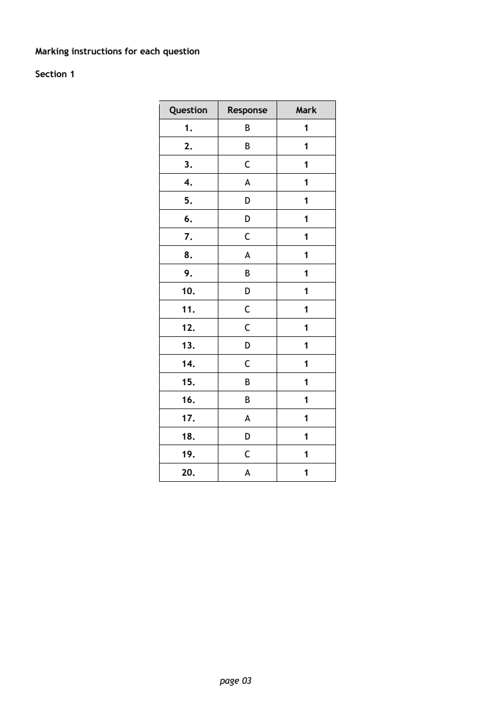
Selectable page text
Marking instructions for each question
Section 1
Question Response Mark
1. B 1
2. B 1
3. C 1
4. A 1
5. D 1
6. D 1
7. C 1
8. A 1
9. B 1
10. D 1
11. C 1
12. C 1
13. D 1
14. C 1
15. B 1
16. B 1
17. A 1
18. D 1
19. C 1
20. A 1
page 03PDF page 4
Paper 2, Question 1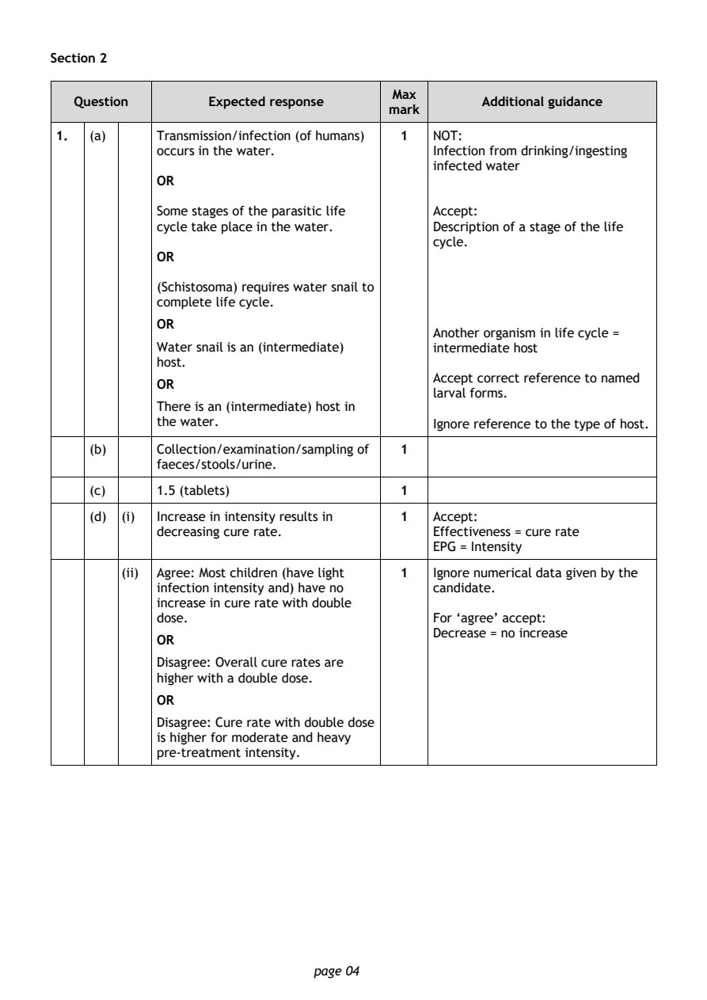
Selectable page text
Section 2
Max
Question Expected response Additional guidance
mark
1. (a) Transmission/infection (of humans) 1 NOT:
occurs in the water. Infection from drinking/ingesting
infected water
OR
Some stages of the parasitic life Accept:
cycle take place in the water. Description of a stage of the life
cycle.
OR
(Schistosoma) requires water snail to
complete life cycle.
OR
Another organism in life cycle =
Water snail is an (intermediate) intermediate host
host.
Accept correct reference to named
OR
larval forms.
There is an (intermediate) host in
the water. Ignore reference to the type of host.
(b) Collection/examination/sampling of 1
faeces/stools/urine.
(c) 1.5 (tablets) 1
(d) (i) Increase in intensity results in 1 Accept:
decreasing cure rate. Effectiveness = cure rate
EPG = Intensity
(ii) Agree: Most children (have light 1 Ignore numerical data given by the
infection intensity and) have no candidate.
increase in cure rate with double
dose. For ‘agree’ accept:
Decrease = no increase
OR
Disagree: Overall cure rates are
higher with a double dose.
OR
Disagree: Cure rate with double dose
is higher for moderate and heavy
pre-treatment intensity.
page 04PDF page 5
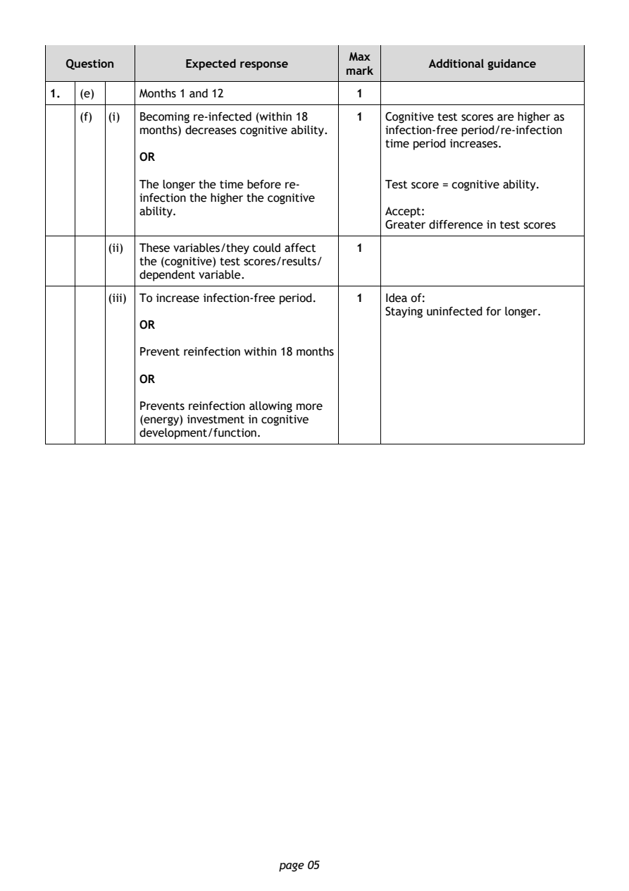
Selectable page text
Max
Question Expected response Additional guidance
mark
1. (e) Months 1 and 12 1
(f) (i) Becoming re-infected (within 18 1 Cognitive test scores are higher as
months) decreases cognitive ability. infection-free period/re-infection
time period increases.
OR
The longer the time before re- Test score = cognitive ability.
infection the higher the cognitive
ability. Accept:
Greater difference in test scores
(ii) These variables/they could affect 1
the (cognitive) test scores/results/
dependent variable.
(iii) To increase infection-free period. 1 Idea of:
Staying uninfected for longer.
OR
Prevent reinfection within 18 months
OR
Prevents reinfection allowing more
(energy) investment in cognitive
development/function.
page 05PDF page 6
Paper 2, Question 2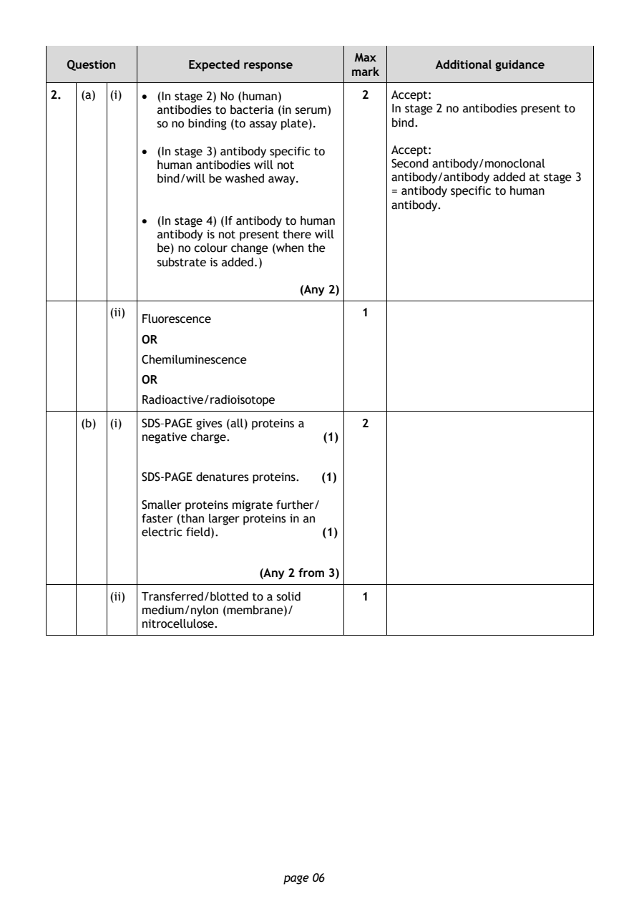
Selectable page text
Max
Question Expected response Additional guidance
mark
2. (a) (i) • (In stage 2) No (human) 2 Accept:
antibodies to bacteria (in serum) In stage 2 no antibodies present to
so no binding (to assay plate). bind.
• (In stage 3) antibody specific to Accept:
human antibodies will not Second antibody/monoclonal
bind/will be washed away. antibody/antibody added at stage 3
= antibody specific to human
antibody.
• (In stage 4) (If antibody to human
antibody is not present there will
be) no colour change (when the
substrate is added.)
(Any 2)
(ii) 1
Fluorescence
OR
Chemiluminescence
OR
Radioactive/radioisotope
(b) (i) SDS–PAGE gives (all) proteins a 2
negative charge. (1)
SDS-PAGE denatures proteins. (1)
Smaller proteins migrate further/
faster (than larger proteins in an
electric field). (1)
(Any 2 from 3)
(ii) Transferred/blotted to a solid 1
medium/nylon (membrane)/
nitrocellulose.
page 06PDF page 7
Paper 2, Question 3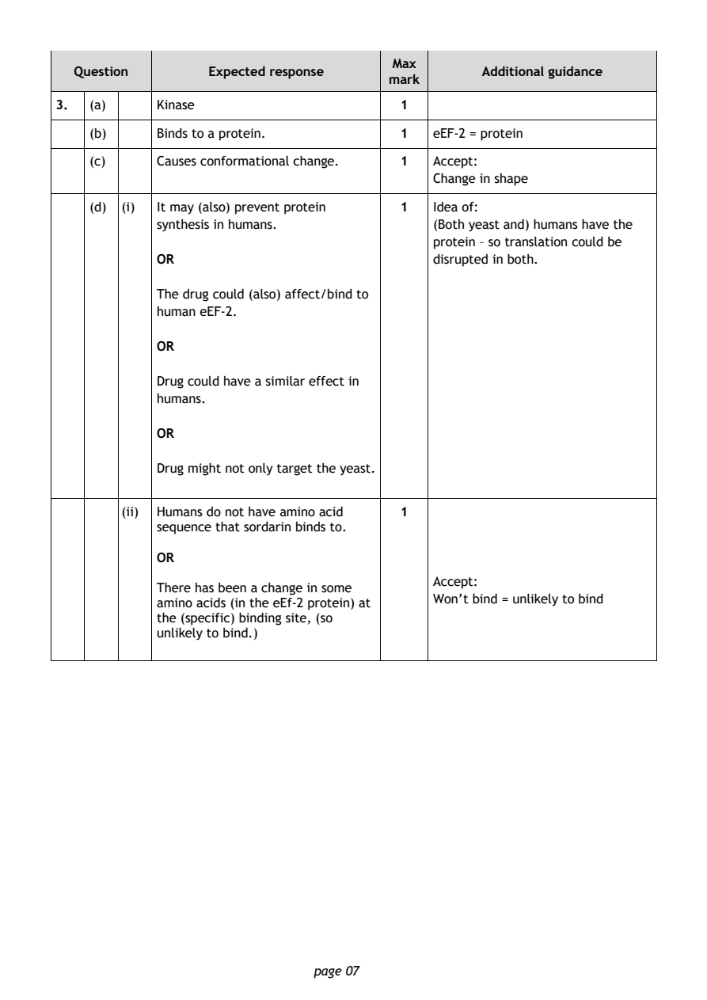
Selectable page text
Max
Question Expected response Additional guidance
mark
3. (a) Kinase 1
(b) Binds to a protein. 1 eEF-2 = protein
(c) Causes conformational change. 1 Accept:
Change in shape
(d) (i) It may (also) prevent protein 1 Idea of:
synthesis in humans. (Both yeast and) humans have the
protein – so translation could be
OR disrupted in both.
The drug could (also) affect/bind to
human eEF-2.
OR
Drug could have a similar effect in
humans.
OR
Drug might not only target the yeast.
(ii) Humans do not have amino acid 1
sequence that sordarin binds to.
OR
Accept:
There has been a change in some
Won’t bind = unlikely to bind
amino acids (in the eEf-2 protein) at
the (specific) binding site, (so
unlikely to bind.)
page 07PDF page 8
Paper 2, Question 4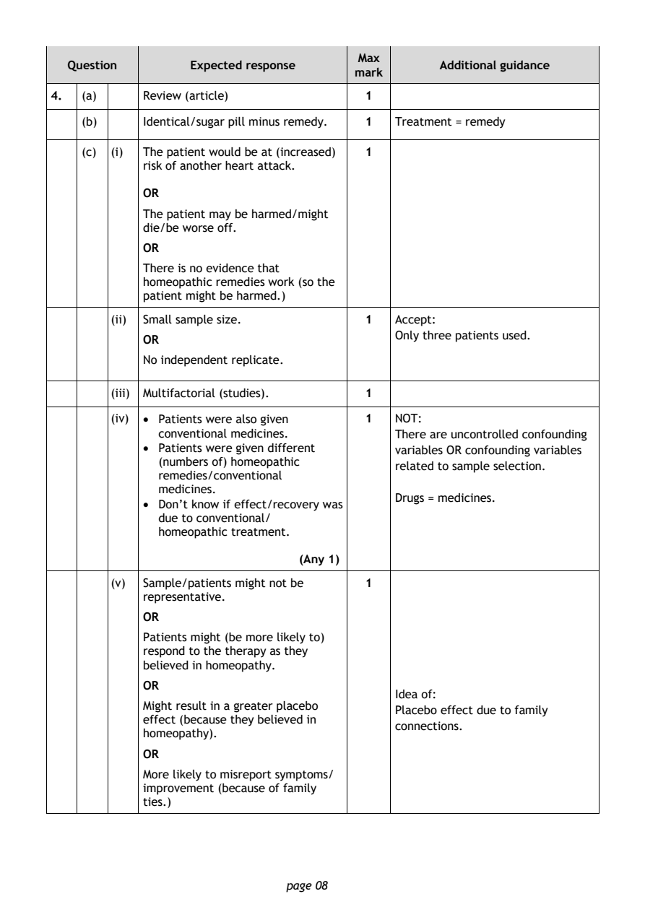
Selectable page text
Max
Question Expected response Additional guidance
mark
4. (a) Review (article) 1
(b) Identical/sugar pill minus remedy. 1 Treatment = remedy
(c) (i) The patient would be at (increased) 1
risk of another heart attack.
OR
The patient may be harmed/might
die/be worse off.
OR
There is no evidence that
homeopathic remedies work (so the
patient might be harmed.)
(ii) Small sample size. 1 Accept:
Only three patients used.
OR
No independent replicate.
(iii) Multifactorial (studies). 1
(iv) • Patients were also given 1 NOT:
conventional medicines. There are uncontrolled confounding
• Patients were given different variables OR confounding variables
(numbers of) homeopathic
related to sample selection.
remedies/conventional
medicines.
Drugs = medicines.
• Don’t know if effect/recovery was
due to conventional/
homeopathic treatment.
(Any 1)
(v) Sample/patients might not be 1
representative.
OR
Patients might (be more likely to)
respond to the therapy as they
believed in homeopathy.
OR
Idea of:
Might result in a greater placebo
Placebo effect due to family
effect (because they believed in
connections.
homeopathy).
OR
More likely to misreport symptoms/
improvement (because of family
ties.)
page 08PDF page 9
Paper 2, Question 5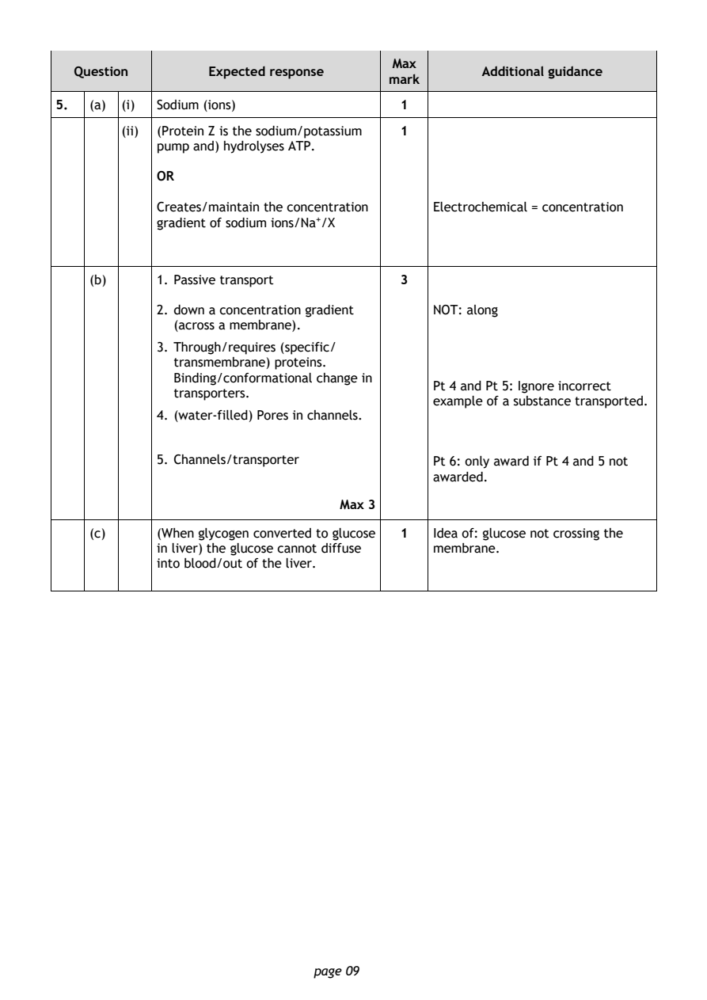
Selectable page text
Max
Question Expected response Additional guidance
mark
5. (a) (i) Sodium (ions) 1
(ii) (Protein Z is the sodium/potassium 1
pump and) hydrolyses ATP.
OR
Creates/maintain the concentration Electrochemical = concentration
gradient of sodium ions/Na⁺/X
(b) 1. Passive transport 3
2. down a concentration gradient NOT: along
(across a membrane).
3. Through/requires (specific/
transmembrane) proteins.
Binding/conformational change in
Pt 4 and Pt 5: Ignore incorrect
transporters.
example of a substance transported.
4. (water-filled) Pores in channels.
5. Channels/transporter Pt 6: only award if Pt 4 and 5 not
awarded.
Max 3
(c) (When glycogen converted to glucose 1 Idea of: glucose not crossing the
in liver) the glucose cannot diffuse membrane.
into blood/out of the liver.
page 09PDF page 10
Paper 2, Question 6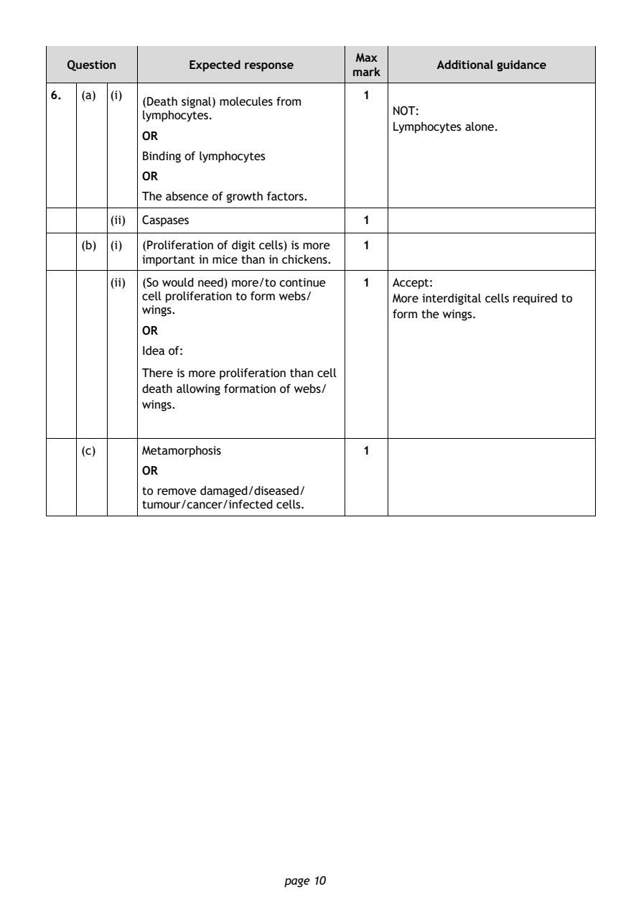
Selectable page text
Max
Question Expected response Additional guidance
mark
6. (a) (i) 1
(Death signal) molecules from
NOT:
lymphocytes.
Lymphocytes alone.
OR
Binding of lymphocytes
OR
The absence of growth factors.
(ii) Caspases 1
(b) (i) (Proliferation of digit cells) is more 1
important in mice than in chickens.
(ii) (So would need) more/to continue 1 Accept:
cell proliferation to form webs/ More interdigital cells required to
wings.
form the wings.
OR
Idea of:
There is more proliferation than cell
death allowing formation of webs/
wings.
(c) Metamorphosis 1
OR
to remove damaged/diseased/
tumour/cancer/infected cells.
page 10PDF page 11
Paper 2, Question 7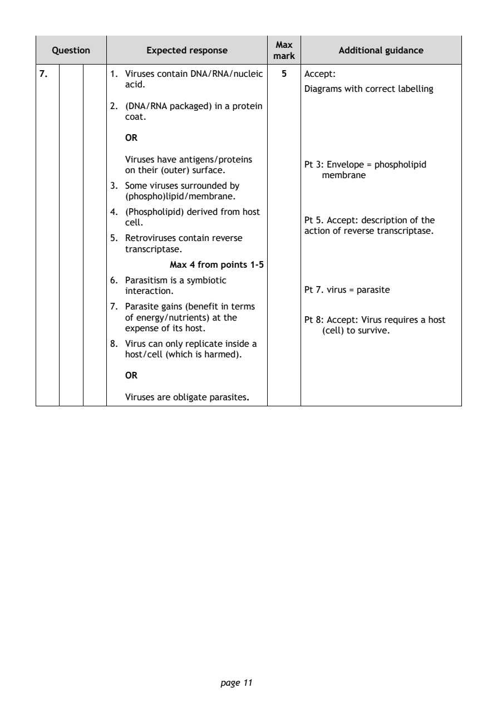
Selectable page text
Max
Question Expected response Additional guidance
mark
7. 1. Viruses contain DNA/RNA/nucleic 5 Accept:
acid.
Diagrams with correct labelling
2. (DNA/RNA packaged) in a protein
coat.
OR
Viruses have antigens/proteins
Pt 3: Envelope = phospholipid
on their (outer) surface.
membrane
3. Some viruses surrounded by
(phospho)lipid/membrane.
4. (Phospholipid) derived from host
Pt 5. Accept: description of the
cell.
action of reverse transcriptase.
5. Retroviruses contain reverse
transcriptase.
Max 4 from points 1-5
6. Parasitism is a symbiotic
interaction. Pt 7. virus = parasite
7. Parasite gains (benefit in terms
of energy/nutrients) at the Pt 8: Accept: Virus requires a host
expense of its host. (cell) to survive.
8. Virus can only replicate inside a
host/cell (which is harmed).
OR
Viruses are obligate parasites.
page 11PDF page 12
Paper 2, Question 8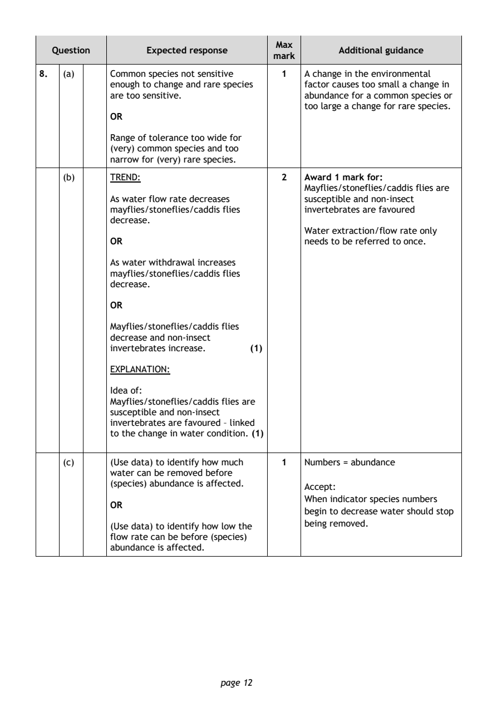
Selectable page text
Max
Question Expected response Additional guidance
mark
8. (a) Common species not sensitive 1 A change in the environmental
enough to change and rare species factor causes too small a change in
are too sensitive. abundance for a common species or
too large a change for rare species.
OR
Range of tolerance too wide for
(very) common species and too
narrow for (very) rare species.
(b) TREND: 2 Award 1 mark for:
Mayflies/stoneflies/caddis flies are
As water flow rate decreases susceptible and non-insect
mayflies/stoneflies/caddis flies invertebrates are favoured
decrease.
Water extraction/flow rate only
OR needs to be referred to once.
As water withdrawal increases
mayflies/stoneflies/caddis flies
decrease.
OR
Mayflies/stoneflies/caddis flies
decrease and non-insect
invertebrates increase. (1)
EXPLANATION:
Idea of:
Mayflies/stoneflies/caddis flies are
susceptible and non-insect
invertebrates are favoured – linked
to the change in water condition. (1)
(c) (Use data) to identify how much 1 Numbers = abundance
water can be removed before
(species) abundance is affected.
Accept:
When indicator species numbers
OR
begin to decrease water should stop
being removed.
(Use data) to identify how low the
flow rate can be before (species)
abundance is affected.
page 12PDF page 13
Paper 2, Question 9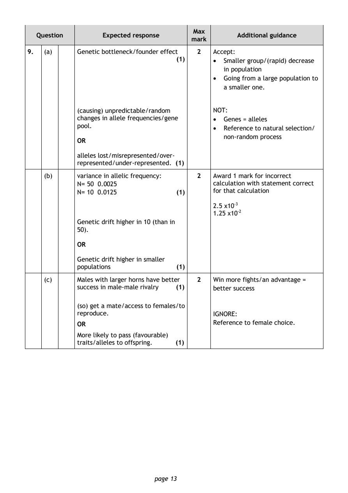
Selectable page text
Max
Question Expected response Additional guidance
mark
9. (a) Genetic bottleneck/founder effect 2 Accept:
(1) • Smaller group/(rapid) decrease
in population
• Going from a large population to
a smaller one.
(causing) unpredictable/random NOT:
changes in allele frequencies/gene • Genes = alleles
pool.
• Reference to natural selection/
non-random process
OR
alleles lost/misrepresented/over-
represented/under-represented. (1)
(b) variance in allelic frequency: 2 Award 1 mark for incorrect
N= 50 0.0025 calculation with statement correct
N= 10 0.0125 (1) for that calculation
2.5 x10⁻³
1.25 x10⁻²
Genetic drift higher in 10 (than in
50).
OR
Genetic drift higher in smaller
populations (1)
(c) Males with larger horns have better 2 Win more fights/an advantage =
success in male-male rivalry (1) better success
(so) get a mate/access to females/to
reproduce. IGNORE:
OR Reference to female choice.
More likely to pass (favourable)
traits/alleles to offspring. (1)
page 13PDF page 14
Paper 2, Question 10Paper 2, Question 11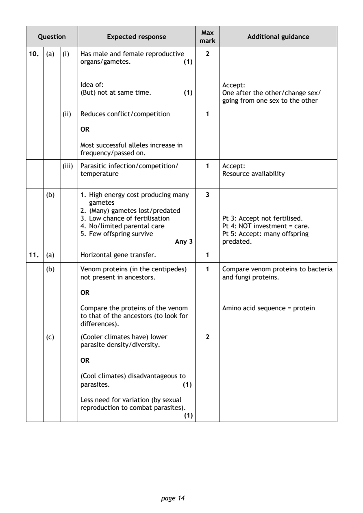
Selectable page text
Max
Question Expected response Additional guidance
mark
10. (a) (i) Has male and female reproductive 2
organs/gametes. (1)
Idea of: Accept:
(But) not at same time. (1) One after the other/change sex/
going from one sex to the other
(ii) Reduces conflict/competition 1
OR
Most successful alleles increase in
frequency/passed on.
(iii) Parasitic infection/competition/ 1 Accept:
temperature Resource availability
(b) 1. High energy cost producing many 3
gametes
2. (Many) gametes lost/predated
3. Low chance of fertilisation Pt 3: Accept not fertilised.
4. No/limited parental care Pt 4: NOT investment = care.
5. Few offspring survive Pt 5: Accept: many offspring
Any 3 predated.
11. (a) Horizontal gene transfer. 1
(b) Venom proteins (in the centipedes) 1 Compare venom proteins to bacteria
not present in ancestors. and fungi proteins.
OR
Compare the proteins of the venom Amino acid sequence = protein
to that of the ancestors (to look for
differences).
(c) (Cooler climates have) lower 2
parasite density/diversity.
OR
(Cool climates) disadvantageous to
parasites. (1)
Less need for variation (by sexual
reproduction to combat parasites).
(1)
page 14PDF page 15
Paper 2, Question 12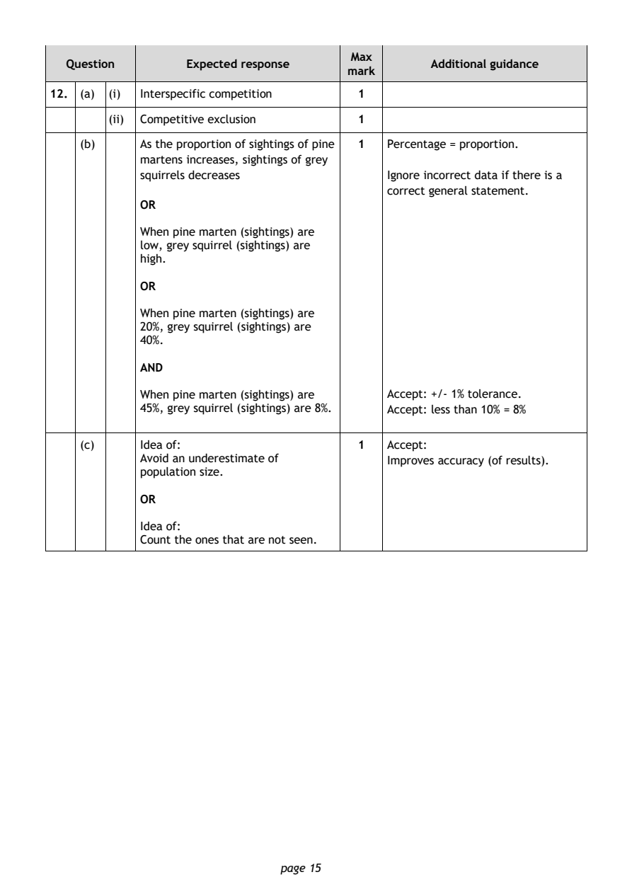
Selectable page text
Max
Question Expected response Additional guidance
mark
12. (a) (i) Interspecific competition 1
(ii) Competitive exclusion 1
(b) As the proportion of sightings of pine 1 Percentage = proportion.
martens increases, sightings of grey
squirrels decreases Ignore incorrect data if there is a
correct general statement.
OR
When pine marten (sightings) are
low, grey squirrel (sightings) are
high.
OR
When pine marten (sightings) are
20%, grey squirrel (sightings) are
40%.
AND
When pine marten (sightings) are Accept: +/- 1% tolerance.
45%, grey squirrel (sightings) are 8%. Accept: less than 10% = 8%
(c) Idea of: 1 Accept:
Avoid an underestimate of Improves accuracy (of results).
population size.
OR
Idea of:
Count the ones that are not seen.
page 15PDF page 16
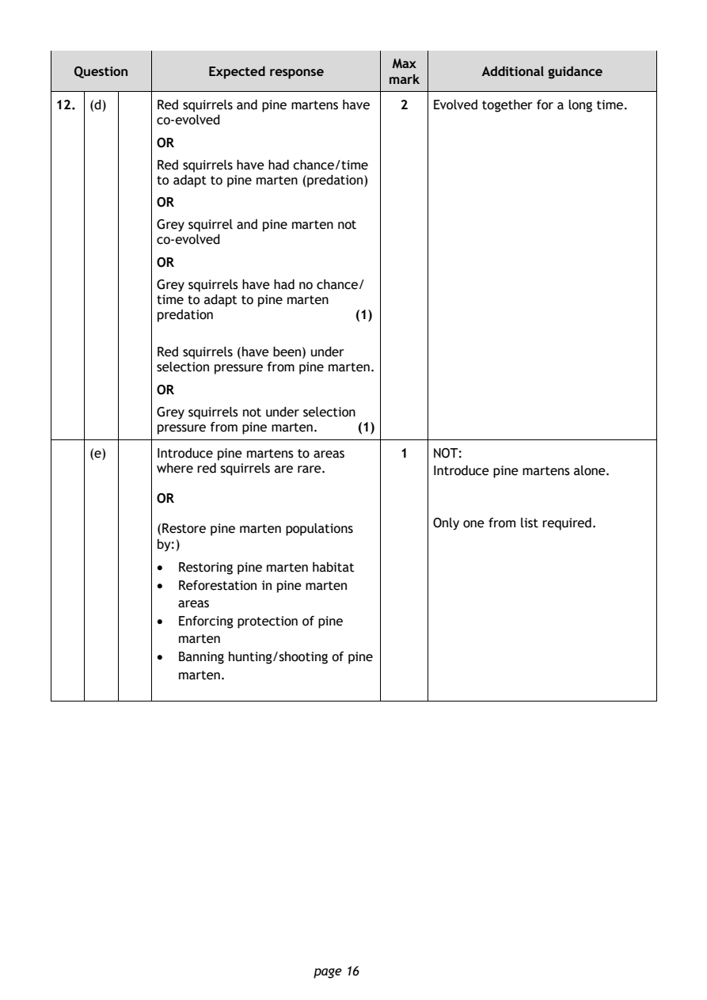
Selectable page text
Max
Question Expected response Additional guidance
mark
12. (d) Red squirrels and pine martens have 2 Evolved together for a long time.
co-evolved
OR
Red squirrels have had chance/time
to adapt to pine marten (predation)
OR
Grey squirrel and pine marten not
co-evolved
OR
Grey squirrels have had no chance/
time to adapt to pine marten
predation (1)
Red squirrels (have been) under
selection pressure from pine marten.
OR
Grey squirrels not under selection
pressure from pine marten. (1)
(e) Introduce pine martens to areas 1 NOT:
where red squirrels are rare. Introduce pine martens alone.
OR
Only one from list required.
(Restore pine marten populations
by:)
• Restoring pine marten habitat
• Reforestation in pine marten
areas
• Enforcing protection of pine
marten
• Banning hunting/shooting of pine
marten.
page 16PDF page 17
Paper 2, Question 13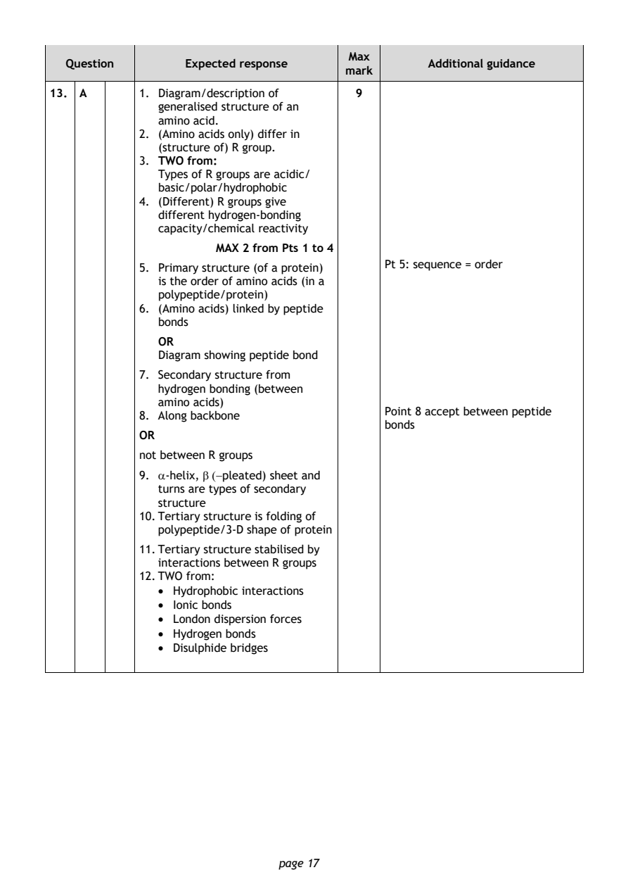
Selectable page text
Max
Question Expected response Additional guidance
mark
13. A 1. Diagram/description of 9
generalised structure of an
amino acid.
2. (Amino acids only) differ in
(structure of) R group.
3. TWO from:
Types of R groups are acidic/
basic/polar/hydrophobic
4. (Different) R groups give
different hydrogen-bonding
capacity/chemical reactivity
MAX 2 from Pts 1 to 4
Pt 5: sequence = order
5. Primary structure (of a protein)
is the order of amino acids (in a
polypeptide/protein)
6. (Amino acids) linked by peptide
bonds
OR
Diagram showing peptide bond
7. Secondary structure from
hydrogen bonding (between
amino acids)
Point 8 accept between peptide
8. Along backbone
bonds
OR
not between R groups
9. α-helix, β (−pleated) sheet and
turns are types of secondary
structure
10. Tertiary structure is folding of
polypeptide/3-D shape of protein
11. Tertiary structure stabilised by
interactions between R groups
12. TWO from:
• Hydrophobic interactions
• Ionic bonds
• London dispersion forces
• Hydrogen bonds
• Disulphide bridges
page 17PDF page 18
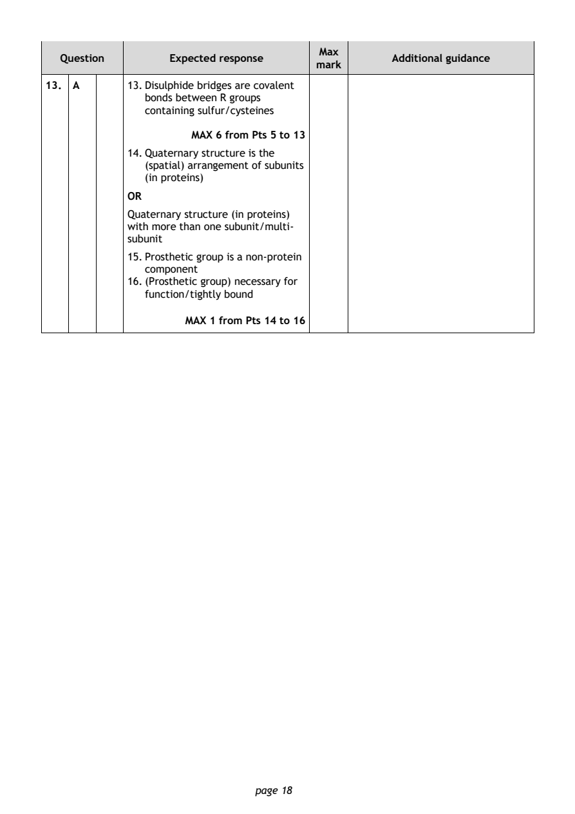
Selectable page text
Max
Question Expected response Additional guidance
mark
13. A 13. Disulphide bridges are covalent
bonds between R groups
containing sulfur/cysteines
MAX 6 from Pts 5 to 13
14. Quaternary structure is the
(spatial) arrangement of subunits
(in proteins)
OR
Quaternary structure (in proteins)
with more than one subunit/multi-
subunit
15. Prosthetic group is a non-protein
component
16. (Prosthetic group) necessary for
function/tightly bound
MAX 1 from Pts 14 to 16
page 18PDF page 19
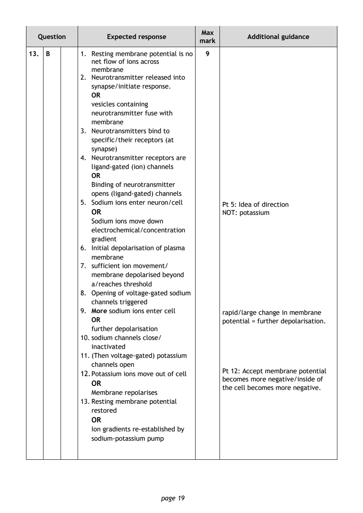
Selectable page text
Max
Question Expected response Additional guidance
mark
13. B 1. Resting membrane potential is no 9
net flow of ions across
membrane
2. Neurotransmitter released into
synapse/initiate response.
OR
vesicles containing
neurotransmitter fuse with
membrane
3. Neurotransmitters bind to
specific/their receptors (at
synapse)
4. Neurotransmitter receptors are
ligand-gated (ion) channels
OR
Binding of neurotransmitter
opens (ligand-gated) channels
5. Sodium ions enter neuron/cell Pt 5: Idea of direction
OR NOT: potassium
Sodium ions move down
electrochemical/concentration
gradient
6. Initial depolarisation of plasma
membrane
7. sufficient ion movement/
membrane depolarised beyond
a/reaches threshold
8. Opening of voltage-gated sodium
channels triggered
9. More sodium ions enter cell rapid/large change in membrane
OR potential = further depolarisation.
further depolarisation
10. sodium channels close/
inactivated
11. (Then voltage-gated) potassium
channels open
Pt 12: Accept membrane potential
12. Potassium ions move out of cell
becomes more negative/inside of
OR
the cell becomes more negative.
Membrane repolarises
13. Resting membrane potential
restored
OR
Ion gradients re-established by
sodium-potassium pump
page 19PDF page 20
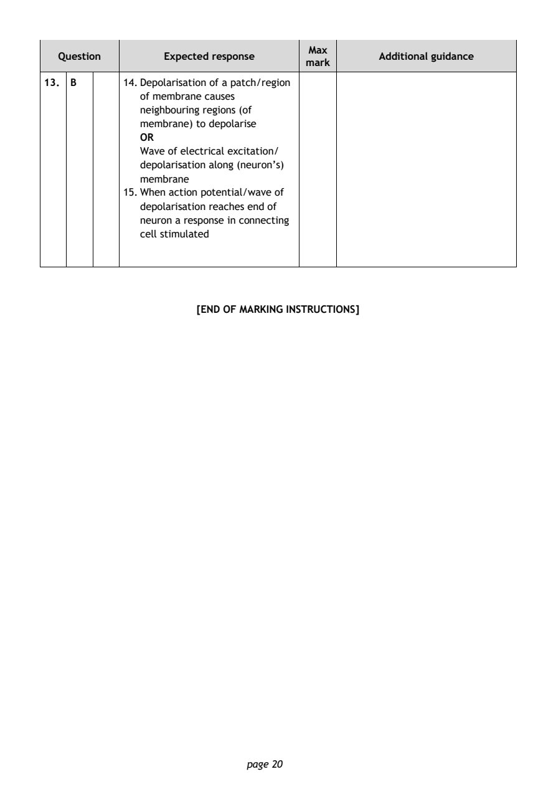
Selectable page text
Max
Question Expected response Additional guidance
mark
13. B 14. Depolarisation of a patch/region
of membrane causes
neighbouring regions (of
membrane) to depolarise
OR
Wave of electrical excitation/
depolarisation along (neuron’s)
membrane
15. When action potential/wave of
depolarisation reaches end of
neuron a response in connecting
cell stimulated
[END OF MARKING INSTRUCTIONS]
page 20